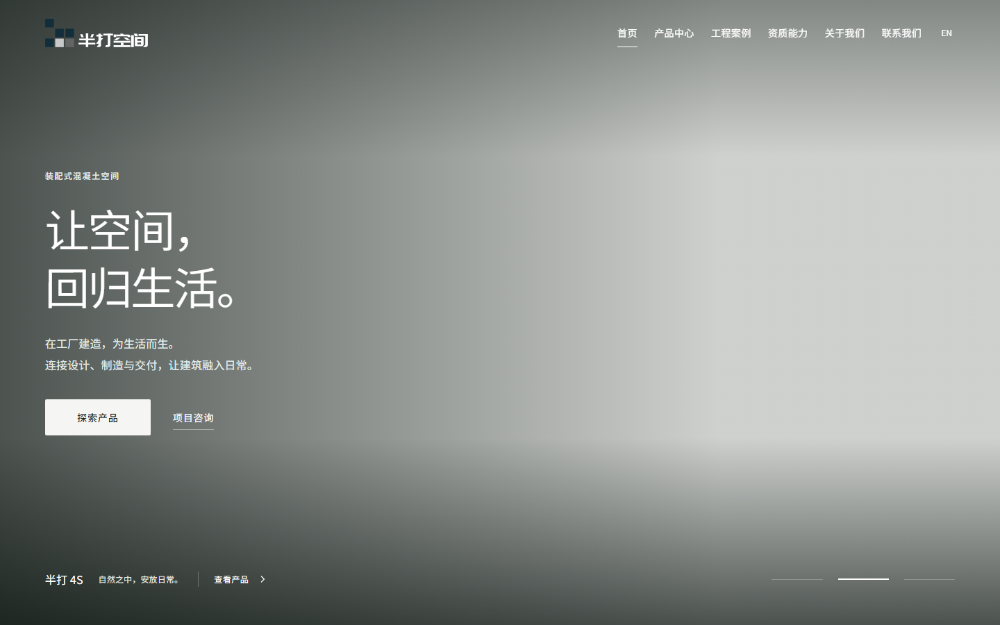
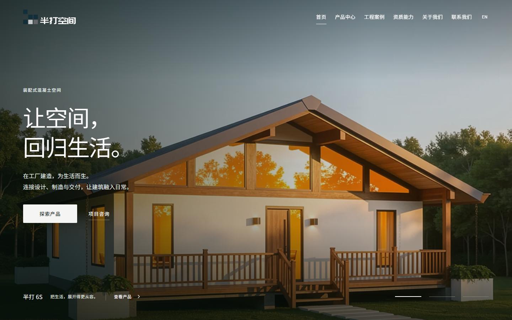

r35 · 轮播加载细节修正
当前可作为甲方视觉确认版本；本报告不代替甲方签收。
问题与修正
模拟下一张图片延迟返回后，复现首屏切到空画面。修正后保留当前照片，等待目标图片加载及解码完成后切换，兼顾取消、连续操作和加载失败。
修正前

修正后，同样延迟下一张图片

本轮实测
48项单元测试、代码/类型/构建、346项图片引用、46项素材检查、18项补充内容检查通过。慢网、取消、连续键盘切换和错误恢复在中英文首页/产品中心，375及1440px共32组本地场景及32组公网场景通过。最终构建11组通用交互、8项轮播布局通过；33页公网HTML与部署包一致。
修改前的r34另实测88项英文布局、22组英文自动可访问性、12组中英文交互；其中4S视频手动播放正常。这些结果标为基线，不冒充修改后的全站复验。
范围与限制
- 本轮仅修改轮播状态处理，未更换Logo、字体、按钮、图片或页面布局；无需变更素材映射。
- 本轮88项英文布局、22组英文自动无障碍和12组中英文交互为修改前r34基线。r35最终构建另执行11组通用交互和8项轮播布局；线上另执行32组慢网及错误场景。
- 本地32组专项针对提交前同一源码构建；最终提交构建及公网版本的主脚本均为BaseLayout.astro_astro_type_script_index_0_lang.C6ooIv7u.js。
- Edge/Chromium Windows 自动化与截图复核；未覆盖实机Safari/iOS/Android。
- r34全站297项布局的首轮加载异常及复测记录继续保留在上一版报告，没有将旧结果冒充本轮全量通过。
- 缺失素材、域名、HTTPS、表单发送服务仍属于后续范围。
- 源码保留独立分支本地提交，不推送GitHub。
运行代码提交：3f1cfa3 · 详细记录 · 上一版视觉修正报告